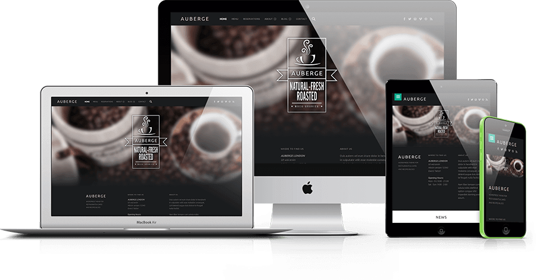

Digital Information Design
Please turn your device sideways

Transform
Your
Future
Why DIFD?
In today’s market, all competitive organizations have the need for professional skills in marketing, e-commerce, graphic design, communication, and Web-based software development and data management. Such organizations also require professionals who can work collaboratively and synthesize information from various disciplines. The DIFD program is designed to meet the growing need for professionals who understand how to harness the power of the Internet and other electronic forms of communication to effectively disseminate information and provide Web-based services to current and potential customers.
Students majoring in Digital Information Design have four concentrations to choose from: Digital Commerce, Digital Mass Media , Interactive Media, and Web Application Development. Within the program, all students take a 29 semester-hour core of courses emphasizing basic and advanced skills in design, digital information, communication theory and the Internet, information systems and organizations, visual design of complex systems, law and ethics, and seminar courses. Students from all tracks work together in a final senior experience that involves collaborating with real-world clients.
The 4 concentrations that make up DIFD
Digital Mass Media
Digital Mass Media centers on shaping Web content to address the requirements of special audiences. The focus is on information gathering and writing with strong emphasis on how digital technology is reshaping traditional mass media and marketing communication functions.
Look at the courses this concentration has to offer:
"This program has allowed me to spread my knowledge and positivity across all sorts of media."
- Ashley Costa (2017 Graduate)
Digital Commerce
Digital Commerce centers on the potential of the Web for the marketing of both commercial and not-for-profit organizations. Students gain a foundation in business and marketing principles. Graduating students have the skills needed to lead an organization’s goal to make the Web an integral part of its marketing plans.
Look at the courses this concentration has to offer:
"Digital Commerce adds some new dimensions to the interaction between buyers and sellers which is really important in the 21st century."
- Ethan Scott (Current Senior)

Web Application Development
Web Application Design is aimed at the technical side of designing and developing Web applications. Building and enhancing Web sites require knowledge of the theory and practice in how the Web works in general, as well as how to design and build software that enables the Web to work for an individual or a business.
"What makes this program so great is that you get to learn about each area so you understand how it all comes together."
- Mary Wilson (Current Junior)
Interactive Media
Interactive Media focuses on interface design and development of interactive content for electronic media. With an emphasis on the visual aspects of electronic interfaces, graduating students are able to develop sites that appeal to users and function efficiently while fulfilling the mission of the project.
"Digital Commerce adds some new dimensions to the interaction between buyers and sellers which is really important in the 21st century."
- Ethan Scott (Current Senior)
Other Courses
In order to create an academic environment in which students use their talents to achieve excellence, take responsibility for the integrity and quality of their own work, and engage in meaningful practices that prepare them to fulfill their obligations as students in an academic community and as responsible global and local citizens, the faculty developed the distinctive General Education Program at Winthrop University. The General Education Program captures the dynamic quality of Winthrop’s academic environment that provides students with a framework for learning and responsible decision-making that they will use throughout their lives.